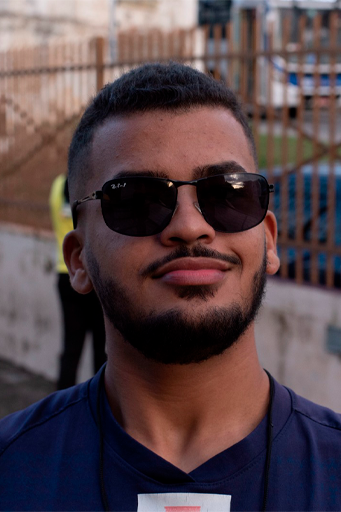

Olá! Sou Antony Almeida Desenvolvedor Web
Já trabalhei como freelancer na área de design, o que aprimorou minhas habilidades na criação de interfaces bonitas e intuitivas. Recentemente fim uma transição de carreira para o desenvolvimento frontend. Atualmente venho trabalhando como freelancer. Meus conhecimentos incluem: HTML, CSS, JavaScript, Bootstrap, WordPress
Saiba Mais!
